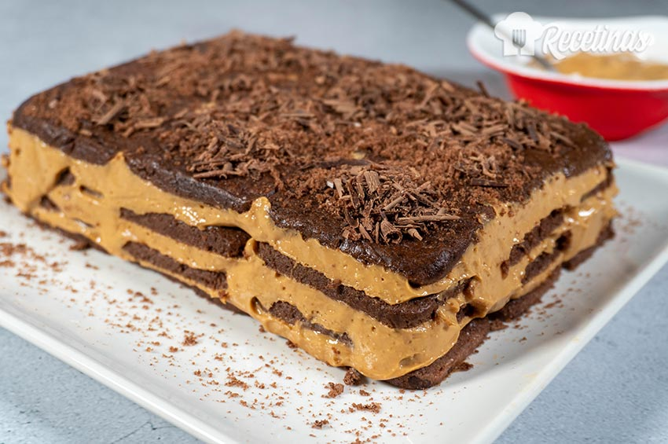

Receta
|
 |
Elaboración
- Para el relleno, mezclar el dulce de leche repostero con el queso crema y reservar.
- Remojar las galletas en la leche o en café e ir colocándolas en un plato rectangular armando una base.
- Colocar una capa de relleno, luego galletas , y así ir formando la torta hasta terminar con una capa de galletas
- Llevar a la nevera hasta que esté bien fría.
- TIP: Espolvorear con cacao en polvo. Al servir, rallar un poco de chocolate amargo por encima.